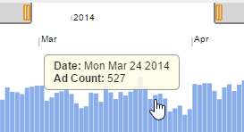
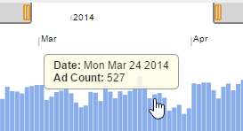
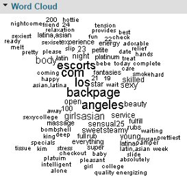
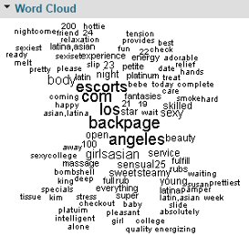

Regional context of scraped ads

Temporal context of scraped ads
Regional context of scraped ads

Temporal context of scraped ads
 Entity movements across multiple locations over time

Commonly used terms in an ad group
Entity movements across multiple locations over time

Commonly used terms in an ad group
 Cases of ad groups saved for future reference
Cases of ad groups saved for future reference
System Description
The TellFinder web app is made up of the following components that allow users to understand the behaviour of entities and organizations behind publicly available Internet adult services advertisements.
Regional Context
The TellFinder overview screen illustrates the volume of scraped advertisements on a map with familiar, web-based navigation controls. Users can quickly pan and zoom to focus on areas of interest or discover other areas with high activity.
Radial indicators appear over each city or region referenced in scraped ads. Larger indicators denote greater ad history. Users can also overlay radial indicators that denote the total or percent change in ads over a configurable period of time.
Users can drill down to explore activity in specific regions to track cross-regional or city activity, ethnic breakdowns and activity summaries.
Archival Search
Adult service advertisements are often deleted from the Internet shortly after being posted. TellFinder leverages an extensive database of archived ads that are regularly scraped from adult services websites. This allows users to track long-term behaviours of entities and organizations using data no longer readily accessible from web-based search engines.
When viewing a regional summary of ads or searching for a specific tip, users can quickly adjust the timeframe over which to view ads. This enables users to narrow their focus to specific dates pertinent to a case, browse through only the latest postings or perform an exhaustive search through the entire archives.
Aggregation and Characterization
After drilling down into a region or searching for a tip, users are presented with a table of matching ad groups. Each entry represents an individual or organization that has been detected and characterized from identifying attributes contained within thousands of postings in the extensive advertisement archive.
These compact, insightful visual representations are codified to provide quick summaries of behaviour. Groups of ads are characterized by the distributions of various attributes, including:
|
|
|
Entity Details
Once an entity or organization of interest has been identified, users can drill down further to review the details of the associated ads. Each Entity Details page contains the following components to help users determine activity patterns and discover affiliations and related advertising activities:
- Entity Resolution: Displays the entity's connection to other entities through shared attributes (websites, phone numbers, email addresses)
- Summary: Lists entity's main identifying attributes (email addresses, phone numbers, websites) and counts the number of ads that match them
- Movement: Represents the post time of ads on multiple region-specific timelines to illustrate movement across geographic locations
- Map: Shows a focused geographic map containing only ads related to the selected entity
- Word Cloud: Lists the most common words from the associated ads, where size indicates frequency of use
- Attributes: Density strip plots summarizing key demographic information from the associated ads
- Images: Summarizes the number of images shared across the associated ads
In addition to reviewing summaries of the grouped advertisements that belong to an entity, users can access a complete list of all the ads in the group. Links are also available to view the original posting or an archived summary.
Case Builder
Users can note related information of interest, such as phone numbers and websites in case files to persist analytic results. Case files can be saved or exported into CSV format for later analysis or import into other tools.